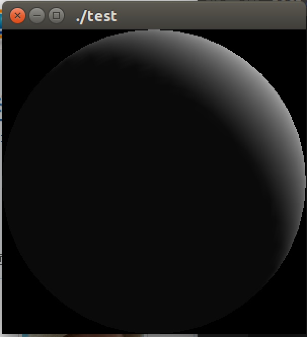

一、什么是OpenGL?
1.OpenGL简介
OpenGL是渲染2D、3D矢量图形硬件的一种软件接口。本质上说，它是一个3D图形和模型库，具有高度的可移植性，并且具有非常快的渲染速度。OpenGL并不是一种语言，而是更像一个C运行时函数库。它提供了一些预包装的功能，帮助开发人员编写功能强大的三维应用程序。 OpenGL可以再多种操作系统平台上运行，例如各种版本的Windows、UNIX/Linux、Mac OS 和 OS/2等。如今，OpenGL广泛流行于游戏、医学影像、地理信息、气象模拟等领域，是高性能图像和交互性场景处理的工业标准。
OpenGL的高效实现（利用了图形加速硬件）存在于Windows，部分UNIX平台和Mac OS。这些实现一般由显示设备厂商提供，而且非常依赖于该厂商提供的硬件。
一般它被认为是一个API(Application Programming Interface, 应用程序编程接口)，包含了一系列可以操作图形、图像的函数。然而，OpenGL本身并不是一个API，它仅仅是一个由Khronos组织制定并维护的规范(Specification)。
OpenGL规范严格规定了每个函数该如何执行，以及它们的输出值。至于内部具体每个函数是如何实现(Implement)的，将由OpenGL库的开发者自行决定（译注：这里开发者是指编写OpenGL库的人）。因为OpenGL规范并没有规定实现的细节，具体的OpenGL库允许使用不同的实现，只要其功能和结果与规范相匹配（亦即，作为用户不会感受到功能上的差异）。
实际的OpenGL库的开发者通常是显卡的生产商。你购买的显卡所支持的OpenGL版本都为这个系列的显卡专门开发的。当你使用Apple系统的时候，OpenGL库是由Apple自身维护的。在Linux下，有显卡生产商提供的OpenGL库，也有一些爱好者改编的版本。这也意味着任何时候OpenGL库表现的行为与规范规定的不一致时，基本都是库的开发者留下的bug。
由于OpenGL的大多数实现都是由显卡厂商编写的，当产生一个bug时通常可以通过升级显卡驱动来解决。这些驱动会包括你的显卡能支持的最新版本的OpenGL，这也是为什么总是建议你偶尔更新一下显卡驱动。
所有版本的OpenGL规范文档都被公开的寄存在Khronos那里。有兴趣的读者可以找到OpenGL3.3（我们将要使用的版本）的规范文档。如果你想深入到OpenGL的细节（只关心函数功能的描述而不是函数的实现），这是个很好的选择。如果你想知道每个函数具体的运作方式，这个规范也是一个很棒的参考。
2.核心模式和立即渲染模式
早期的OpenGL使用立即渲染模式（Immediate mode，也就是固定渲染管线），这个模式下绘制图形很方便。OpenGL的大多数功能都被库隐藏起来，开发者很少能控制OpenGL如何进行计算的自由。而开发者迫切希望能有更多的灵活性。随着时间推移，规范越来越灵活，开发者对绘图细节有了更多的掌控。立即渲染模式确实容易使用和理解，但是效率太低。因此从OpenGL3.2开始，规范文档开始废弃立即渲染模式，并鼓励开发者在OpenGL的核心模式(Core-profile)下进行开发，这个分支的规范完全移除了旧的特性。
当使用OpenGL的核心模式时，OpenGL迫使我们使用现代的函数。当我们试图使用一个已废弃的函数时，OpenGL会抛出一个错误并终止绘图。现代函数的优势是更高的灵活性和效率，然而也更难于学习。立即渲染模式从OpenGL实际运作中抽象掉了很多细节，因此它在易于学习的同时，也很难让人去把握OpenGL具体是如何运作的。现代函数要求使用者真正理解OpenGL和图形编程，它有一些难度，然而提供了更多的灵活性，更高的效率，更重要的是可以更深入的理解图形编程。
这也是为什么我们的教程面向OpenGL3.3的核心模式。虽然上手更困难，但这份努力是值得的。
现今，更高版本的OpenGL已经发布（写作时最新版本为4.5），你可能会问：既然OpenGL 4.5 都出来了，为什么我们还要学习OpenGL 3.3？答案很简单，所有OpenGL的更高的版本都是在3.3的基础上，引入了额外的功能，并没有改动核心架构。新版本只是引入了一些更有效率或更有用的方式去完成同样的功能。因此，所有的概念和技术在现代OpenGL版本里都保持一致。当你的经验足够，你可以轻松使用来自更高版本OpenGL的新特性。
当使用新版本的OpenGL特性时，只有新一代的显卡能够支持你的应用程序。这也是为什么大多数开发者基于较低版本的OpenGL编写程序，并只提供选项启用新版本的特性。
在有些教程里你会看见更现代的特性，它们同样会以这种红色注释方式标明。
3.扩展
OpenGL的一大特性就是对扩展(Extension)的支持，当一个显卡公司提出一个新特性或者渲染上的大优化，通常会以扩展的方式在驱动中实现。如果一个程序在支持这个扩展的显卡上运行，开发者可以使用这个扩展提供的一些更先进更有效的图形功能。通过这种方式，开发者不必等待一个新的OpenGL规范面世，就可以使用这些新的渲染特性了，只需要简单地检查一下显卡是否支持此扩展。通常，当一个扩展非常流行或者非常有用的时候，它将最终成为未来的OpenGL规范的一部分。
使用扩展的代码大多看上去如下：
1 | if(GL_ARB_extension_name) |
使用OpenGL3.3时，我们很少需要使用扩展来完成大多数功能，当需要的时候，本教程将提供适当的指示。
4.状态机
OpenGL自身是一个巨大的状态机(State Machine)：一系列的变量描述OpenGL此刻应当如何运行。OpenGL的状态通常被称为OpenGL上下文(Context)。我们通常使用如下途径去更改OpenGL状态：设置选项，操作缓冲。最后，我们使用当前OpenGL上下文来渲染。
假设当我们想告诉OpenGL去画线段而不是三角形的时候，我们通过改变一些上下文变量来改变OpenGL状态，从而告诉OpenGL如何去绘图。一旦我们改变了OpenGL的状态为绘制线段，下一个绘制命令就会画出线段而不是三角形。
当使用OpenGL的时候，我们会遇到一些状态设置函数(State-changing Function)，这类函数将会改变上下文。以及状态使用函数(State-using Function)，这类函数会根据当前OpenGL的状态执行一些操作。只要你记住OpenGL本质上是个大状态机，就能更容易理解它的大部分特性。
5.对象
OpenGL库是用C语言写的，同时也支持多种语言的派生，但其内核仍是一个C库。由于C的一些语言结构不易被翻译到其它的高级语言，因此OpenGL开发的时候引入了一些抽象层。“对象(Object)”就是其中一个。
在OpenGL中一个对象是指一些选项的集合，它代表OpenGL状态的一个子集。比如，我们可以用一个对象来代表绘图窗口的设置，之后我们就可以设置它的大小、支持的颜色位数等等。可以把对象看做一个C风格的结构体(Struct)：
1 | struct object_name { |
在有些教程中一直使用的都是OpenGL的基本类型，但由于作者觉得在本教程系列中并没有一个必须使用它们的原因，所有的类型都改为了自带类型。但是请仍然记住，使用OpenGL的类型的好处是保证了在各平台中每一种类型的大小都是统一的。你也可以使用其它的定宽类型(Fixed-width Type)来实现这一点。
当我们使用一个对象时，通常看起来像如下一样（把OpenGL上下文看作一个大的结构体）：
1 | // OpenGL的状态 |
这一小段代码展现了你以后使用OpenGL时常见的工作流。我们首先创建一个对象，然后用一个id保存它的引用（实际数据被储存在后台）。然后我们将对象绑定至上下文的目标位置（例子中窗口对象目标的位置被定义成GL_WINDOW_TARGET）。接下来我们设置窗口的选项。最后我们将目标位置的对象id设回0，解绑这个对象。设置的选项将被保存在objectId所引用的对象中，一旦我们重新绑定这个对象到GL_WINDOW_TARGET位置，这些选项就会重新生效。
目前提供的示例代码只是OpenGL如何操作的一个大致描述，通过阅读以后的教程你会遇到很多实际的例子。
使用对象的一个好处是在程序中，我们不止可以定义一个对象，并设置它们的选项，每个对象都可以是不同的设置。在我们执行一个使用OpenGL状态的操作的时候，只需要绑定含有需要的设置的对象即可。比如说我们有一些作为3D模型数据（一栋房子或一个人物）的容器对象，在我们想绘制其中任何一个模型的时候，只需绑定一个包含对应模型数据的对象就可以了（当然，我们需要先创建并设置对象的选项）。拥有数个这样的对象允许我们指定多个模型，在想画其中任何一个的时候，直接将对应的对象绑定上去，便不需要再重复设置选项了。
二、开发环境配置
1.Ubuntu开发环境配置
1 | //使用 apt 安装 OpenGL 和开发包 |
2.测试程序
用vim写一段测试程序，测试下开发环境是否安装成功。
1 | // test.c |
3.编译运行
1 | gcc test.c -o test -lGL -lglut |
4.效果图
5.附录：
1 | void glutWireSphere(GLdouble radius, GLint slices, GLint stacks); 线框球 |
三、OpenGL流程详细介绍
1、简介
OpenGL（Open Graphics Library）是一个跨编程语言、跨平台的编程图形程序接口，它将计算机的资源抽象称为一个个OpenGL的对象，对这些资源的操作抽象为一个个的OpenGL指令。
OpenGL ES（OpenGL for Embedded Systems）是 OpenGL 三维图形 API 的子集，针对手机、PDA和游戏主机等嵌入式设备而设计，去除了许多不必要和性能较低的API接口。
本文介绍的OpenGL版本是基于OpenGL ES 3.0的。这也是目前覆盖率最高的OpenGL版本，被广泛运用在各种终端设备上。
2、OpenGL上下文（Context）
在应用程序调用任何OpenGL的指令之前，需要安排首先创建一个OpenGL的上下文。这个上下文是一个非常庞大的状态机，保存了OpenGL中的各种状态，这也是OpenGL指令执行的基础。
OpenGL的函数不管在哪个语言中，都是类似C语言一样的面向过程的函数，本质上都是对OpenGL上下文这个庞大的状态机中的某个状态或者对象进行操作，当然你得首先把这个对象设置为当前对象。因此，通过对OpenGL指令的封装，是可以将OpenGL的相关调用封装成为一个面向对象的图形API的。
由于OpenGL上下文是一个巨大的状态机，切换上下文往往会产生较大的开销，但是不同的绘制模块，可能需要使用完全独立的状态管理。因此，可以在应用程序中分别创建多个不同的上下文，在不同线程中使用不同的上下文，上下文之间共享纹理、缓冲区等资源。这样的方案，会比反复切换上下文，或者大量修改渲染状态，更加合理高效的。
3、帧缓冲区（FrameBuffer）
OpenGL是图形API，因此可以说所有的运算和结果最终都是需要通过图像进行输出的。那么绘图必然就需要有一块画板，而帧缓冲区就是OpenGL中的画板。但是特别需要注意的是，帧缓冲区不是常规意义缓冲区（就像鲸鱼不是鱼一样），它并不是实际存储数据的对象，类似画画的时候，需要在画板上放一块画布，才能实际在画布上进行绘画，这些画布可以是纹理（Texture）或者是渲染缓冲区（RenderBuffer），而放置这些画布的位置被称为帧缓冲区的附着（Attachment）。
3.1、附着（Attachment）
附着可以理解为画板上的夹子，夹住了哪个画布，就往对应画布上输出数据。
在帧缓冲区中可以附着3种类型的附着，颜色附着（ColorAttachment），深度附着（DepthAttachment），模板附着（StencilAttachment）。这三种附着对应的存储区域也被称为颜色缓冲区（ColorBuffer），深度缓冲区（DepthBuffer），模板缓冲区（StencilBuffer）。
颜色附着输出绘制图像的颜色数据，也就是平时常见的图像的RGBA数据。如果使用了多渲染目标(Multiple Render Targets)技术，那么颜色附着的数量可能会大于一。
深度附着输出绘制图像的深度数据，深度数据主要在3D渲染中使用，一般用于判断物体的远近来实现遮挡的效果。
模板附着输出模板数据，模板数据是渲染中较为高级的用法，一般用于渲染时进行像素级别的剔除和遮挡效果，常见的应用场景比如三维物体的描边。
4、纹理（Texture）和渲染缓冲区（RenderBuffer）
前面已经说过，帧缓冲区并不是实际存储数据的地方，实际存储图像数据数据的对象就是纹理和渲染缓冲区。
他们三者的关系是这样的，纹理或渲染缓冲区作为帧缓冲区的附着。
那么，纹理和渲染缓冲区又有什么关系和区别呢？
纹理和渲染缓冲区同样是存储图像的对象。一般来说，渲染缓冲区对应操作系统提供的窗口，而纹理代表列离屏的图像存储区域。因此，渲染缓冲区都是2D的图像类型，而纹理一般有立方体纹理，1D、2D、3D纹理等类型，同时纹理还额外支持了mipmap等其他特性。
值得注意的是，一般来说渲染缓冲区和纹理不能同时挂载在同一个帧缓冲区上。
5、顶点数组（VertexArray）和顶点缓冲区（VertexBuffer）
准备好了画布之后，就要开始画图了。画图一般是先画好图像的骨架，然后再往骨架里面填充颜色，这对于OpenGL也是一样的。顶点数据就是要画的图像的骨架，和现实中不同的是，OpenGL中的图像都是由图元组成。在OpenGL ES中，有3种类型的图元：点、线、三角形。那这些顶点数据最终是存储在哪里的呢？开发者可以选择设定函数指针，在调用绘制方法的时候，直接由内存传入顶点数据，也就是说这部分数据之前是存储在内存当中的，被称为顶点数组。而性能更高的做法是，提前分配一块显存，将顶点数据预先传入到显存当中。这部分的显存，就被称为顶点缓冲区。
6、索引数组（ElementArray）和索引缓冲区（ElementBuffer）
其实我觉得索引在OpenGL叫Element确实有点不够贴切，而在DirectX中叫做IndexBuffer更加合适一些。
索引数据的目的主要是为了实现顶点的复用，在绘制图像时，总是会有一些顶点被多个图元共享，而反复对这个顶点进行运算常常是没有必要的（也有某些特殊场景需要）。因此对通过索引数据，指示OpenGL绘制顶点的顺序，不但能防止顶点的重复运算，也能在不修改顶点数据的情况下，一定程度的重新组合图像。
和顶点数据一样，索引数据也可以以索引数组的形式存储在内存当中，调用绘制函数时传入；或者提前分配一块显存，将索引数据存储在这块显存当中，这块显存就被称为索引缓冲区。同样的，使用缓冲区的方式，性能一般会比直接使用索引数组的方式更加高效。
OpenGL ES提供了2种主要的绘制方法：glDrawArrays和glDrawElements。前者对应的就是没有索引数据的情况，后者对应的是有索引数据的情况。
7、着色器程序（Shader）
在固定渲染管线时代，这一步并不是必须的。而是由内置的一段包含了光照、坐标变换、裁剪等等诸多功能的固定shader程序来完成。而可自定义shader，可以说是现代图形API最重要的能力了，没有之一。可以说，shader提供对图形运算的精细操作，带来了各式各样的处理能力，极度的丰富了图形API所能实现的效果。
OpenGL和其他主流的图形API早在好几年前，就全面的将固定渲染管线架构变为了可编程渲染管线。因此，OpenGL在实际调用绘制函数之前，还需要指定一个由shader编译成的着色器程序。
常见的着色器主要有顶点着色器（VertexShader），片段着色器（FragmentShader）/像素着色器（PixelShader），几何着色器（GeometryShader），曲面细分着色器（TessellationShader）。片段着色器和像素着色器只是在OpenGL和DX中的不同叫法而已。可惜的是，直到OpenGL ES 3.0，依然只支持了顶点着色器和片段着色器这两个最基础的着色器。
OpenGL在处理shader时，和其他编译器一样。通过编译、链接等步骤，生成了着色器程序（glProgram），着色器程序同时包含了顶点着色器和片段着色器的运算逻辑。在OpenGL进行绘制的时候，首先由顶点着色器对传入的顶点数据进行运算。再通过图元装配，将顶点转换为图元。然后进行光栅化，将图元这种矢量图形，转换为栅格化数据。最后，将栅格化数据传入片段着色器中进行运算。片段着色器会对栅格化数据中的每一个像素进行运算，并决定像素的颜色，也可以在这个阶段将某些像素丢弃。
其中像素的颜色可以是具体的数值或者是由某种算法计算而来的。如果图元有纹理，就必须用纹理来产生图元的二维渲染图象上每个像素的颜色。对于图元在二维屏幕上图象的每个像素来说，都必须从纹理中获得一个颜色值。我们把这一过程称为纹理过滤（texture filtering），纹理过滤根据不同的过滤方式会由一个或多个像素确定最终获得的颜色。表示这个像素位置的数据被称为纹理坐标（TextureCoordinate）而寻找这个纹理中对应像素位置的方法被称为纹理寻址方式或者纹理环绕方式（TextureWrap）。
最终，没有被丢弃的像素，下一步会进入测试阶段。通过了深度测试和模板测试，会和帧缓冲区上的颜色附着（FrameBuffer上的ColorAttachment）上的颜色进行混合，决定最终留在画布上的颜色是什么。

7.1、顶点着色器（VertexShader）
顶点着色器是OpenGL中用于计算顶点属性的程序。顶点着色器是逐顶点运算的程序，也就是说每个顶点数据都会执行一次顶点着色器，当然这是并行的，并且顶点着色器运算过程中无法访问其他顶点的数据。
顶点着色器的数据输入主要有两种，统一变量（Uniform）、顶点属性（VertexAttribute）。统一变量在所有顶点运算中是一样的，而顶点属性则是从外部输入的顶点数据中获取，一般在每个顶点运算中都是不同的。
一般来说典型的需要计算的顶点属性主要包括顶点坐标变换、逐顶点光照运算等等。顶点坐标由自身坐标系转换到归一化坐标系的运算，就是在这里发生的。
同时顶点着色器的输出结果，也会作为片段着色器的输入。

7.2、片段着色器（FragmentShader）
片段着色器是OpenGL中用于计算片段（像素）颜色的程序。片段做社区是逐像素运算的程序，也就是说每个像素都会执行一次片段着色器，当然也是并行的。
片段着色器的的数据输入主要有三种种，统一变量（Uniform）、顶点着色器输入变量（也被称为可变变量varying）、采样器（Sampler）。统一变量的值，在同个OpenGL着色器程序中的顶点着色器和片段着色器中是一致的。顶点着色器输入变量在每个像素运算中则一般是不同的，它的值由组成图元的顶点的顶点着色器运算输出的值，根据像素位置进行插值的结果而决定。采样器则是用于从设定好的纹理中，获取纹理的像素颜色的。
在片段着色器中允许丢弃像素，而使得像素不参与后续的运算。

8、逐片段操作（Per-Fragment Operation）

8.1、测试（Test）
在着色器程序完成之后，我们得到了像素数据。这些数据必须要通过测试才能最终绘制到画布，也就是帧缓冲上的颜色附着上。
测试主要可以分为像素所有者测试（PixelOwnershipTest）、裁剪测试（ScissorTest）、模板测试（StencilTest）和深度测试（DepthTest），执行的顺序也是按照这个顺序进行执行。
最开始进行的测试是像素所有者测试，主要是剔除不属于当前程序的像素运算。
之后裁剪测试，主要是剔除窗口区域之外的像素。
这两个测试都是由OpenGL内部实现的，无需开发者干预，因此不再进行赘述。
深度测试，主要是通过对像素的运算出来的深度，也就是像素离屏幕的距离进行对比，根据OpenGL设定好的深度测试程序，决定是否最终渲染到画布上。一般默认的程序是将离屏幕较近的像素保留，而将离屏幕较远的像素丢弃。如果像素最终被渲染到画布上，根据设定好的OpenGL深度覆写状态，可能会更新帧缓冲区上深度附着的值，方便进行下一次的比较。
模板测试和深度测试的执行原理一致，但是执行的顺序是在深度测试之前的，放在后面 主要是比深度测试更加难以理解一些，初学者可以暂时跳过这个部分。模板测试同样也是通过模板测试程序去决定最终的像素是否丢弃，同样也是根据OpenGL的模板覆写状态决定是否更新像素的模板值。模板测试给开发者提供了高性能的裁剪方案，三维物体的描边技术，就是模板测试典型的用处之一。
8.2、混合（Blending）
在测试阶段之后，如果像素依然没有被剔除，那么像素的颜色将会和帧缓冲区中颜色附着上的颜色进行混合，混合的算法可以通过OpenGL的函数进行指定。但是OpenGL提供的混合算法是有限的，如果需要更加复杂的混合算法，一般可以通过像素着色器进行实现，当然性能会比原生的混合算法差一些。
8.3、抖动（Dithering）
在混合阶段过后，根据OpenGL的状态设置，会决定是否有抖动这个阶段。
抖动是一种针对对于可用颜色较少的系统，可以以牺牲分辨率为代价，通过颜色值的抖动来增加可用颜色数量的技术。抖动操作是和硬件相关的，允许程序员所做的操作就只有打开或关闭抖动操作。实际上，若机器的分辨率已经相当高，激活抖动操作根本就没有任何意义。默认情况下，抖动是激活的。

9、渲染到纹理
有些OpenGL程序并不希望渲染出来的图像立即显示在屏幕上，而是需要多次渲染。可能其中一次渲染的结果是下次渲染的输入。因此，如果帧缓冲区的颜色附着设置为一张纹理，那么渲染完成之后，可以重新构造新的帧缓冲区，并将上次渲染出来的纹理作为输入，重新进行前面所述的流程。
10、渲染上屏/交换缓冲区(SwapBuffer)
前面已经提过，渲染缓冲区一般映射的是系统的资源比如窗口。如果将图像直接渲染到窗口对应的渲染缓冲区，则可以将图像显示到屏幕上。
但是，值得注意的是，如果每个窗口只有一个缓冲区，那么在绘制过程中屏幕进行了刷新，窗口可能显示出不完整的图像。
为了解决这个问题，常规的OpenGL程序至少都会有两个缓冲区。显示在屏幕上的称为屏幕缓冲区，没有显示的称为离屏缓冲区。在一个缓冲区渲染完成之后，通过将屏幕缓冲区和离屏缓冲区交换，实现图像在屏幕上的显示。
由于显示器的刷新一般是逐行进行的，因此为了防止交换缓冲区的时候屏幕上下区域的图像分属于两个不同的帧，因此交换一般会等待显示器刷新完成的信号，在显示器两次刷新的间隔中进行交换，这个信号就被称为垂直同步信号，这个技术被称为垂直同步。
使用了双缓冲区和垂直同步技术之后，由于总是要等待缓冲区交换之后再进行下一帧的渲染，使得帧率无法完全达到硬件允许的最高水平。为了解决这个问题，引入了三缓冲区技术，在等待垂直同步时，来回交替渲染两个离屏的缓冲区，而垂直同步发生时，屏幕缓冲区和最近渲染完成的离屏缓冲区交换，实现充分利用硬件性能的目的。

11.顶点数据最终加工成图像的过程
着色器（shader）是在GPU上运行的小程序，GPU有成千上万个处理核心，能进行非常多的并行计算，在些计算的逻辑就写在着色器里，上图中蓝色部分就是表示我们可以通过写shader来进行控制的部分
顶点着色器先把3D坐标转换成另一种3D坐标，也就是OpenGL世界里的坐标
图元着色器会把顶点着色器传进来的坐标连接成一个图形
几何着色器可以进一步构造新的图元或其他形状
光栅化就是把图元映射成屏幕上对应的像素
片段着色器用来给物体上色
测试与混合如果物体对应Alpha值所表示的颜色带有一定的透明，它后面有不完全透明的物体，则要跟后面物体的颜色进行混合，以此达到透明效果，如果被前面物体挡住了，就丢弃被挡住部分的像素
整个流程就像工厂里的流水线一样，把原料（顶点数据）从一头放入，经过一道道工序的处理，最终变成产品，所以这个渲染流程也叫渲染流水线

四、例程
1.创建窗口
1 | // System Headers |
2.能控制移动的彩色矩形
1 |
|